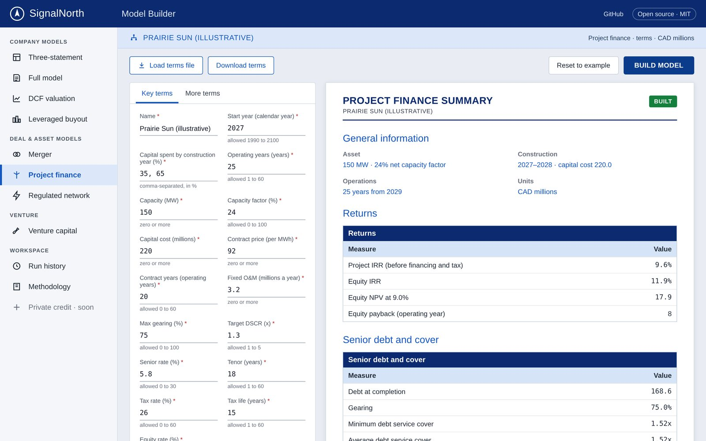
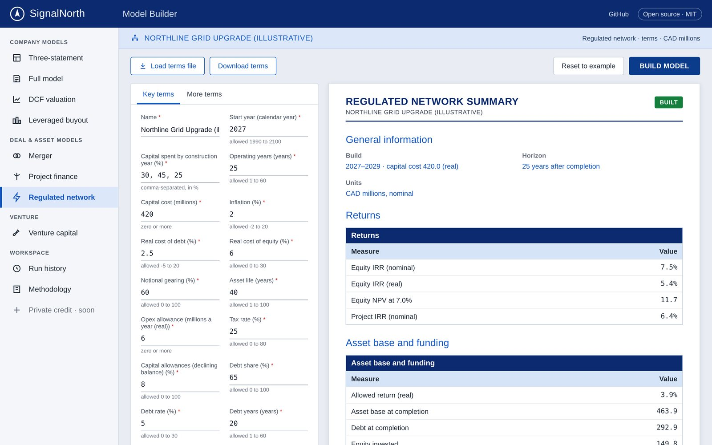

Full company model
Statements, working capital, PP&E, debt and share schedules, WACC, DCF and scenarios, from a ticker's SEC filings. 16 tabs.
Financial models you can audit, line by line. Give it a ticker, a filing or a term sheet, and it builds a working Excel model in minutes instead of days.
Building a full company model by hand takes an analyst a couple of days: pulling figures from the 10-K, laying out the statements, linking the schedules, checking it balances. Most of that time is mechanical, and most model errors come from it.
SignalNorth does the mechanical part and shows its work. Every number traces to the filing or input it came from, every workbook is live Excel formulas you can audit, and when a model can't be built correctly it says exactly why instead of guessing. It caught a large undervaluation of Visa caused by a years-stale SEC figure, which is why it now cross-checks stale data.
How it's checked
Statements, working capital, PP&E, debt and share schedules, WACC, DCF and scenarios, from a ticker's SEC filings. 16 tabs.
Sources and uses, debt tranches with a cash sweep, covenants, dividend recap, management incentive pool, returns attribution.
Accretion and dilution, purchase accounting with goodwill, synergies and a pro forma balance sheet.
Sculpted debt sized to a DSCR target, reserves, LLCR and PLCR, and an indicative Moody's and S&P credit view.
Rate base, allowed return, revenue requirement and tax gross-up for a cost-of-service asset.
Rounds with an option-pool shuffle, SAFEs, the cap table after every round, and an exit waterfall with liquidation preferences.
Picking a model, filling in the terms and building it: the summary memo appears on the right and the Excel workbook is ready to download.



Open it in Excel; no install needed. It uses illustrative numbers. More samples are on the way.
| Model | Example | File |
|---|---|---|
| Venture capital | Seed to Series B (illustrative) | Download .xlsx |
For developers: the code is open source on GitHub.
Want to see it run live? I'm happy to walk you through it.
Get in touch